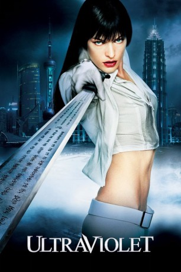

#1628 Ultraviolet
 
 IMDB-Wertung: 4.4 / 10
IMDB-Wertung: 4.4 / 10  Metascore: 18
Metascore: 18 
Ende des 21. Jahrhunderts hat sich eine unter den Menschen eine Untergruppe gebildet, die sich durch einen gezüchteten Virus genetisch verändert hat. Die Betroffenen sind schneller, haben größere Ausdauer und sind intelligenter. Als man sie von den normalen Menschen trennt, steht die Welt am Rande eines Bürgerkriegs zwischen den beiden Gruppen mit dem Ziel, die "kranke Bevölkerung" auszulöschen. Der Film handelt von der Infizierten Violet, die einen neunjährigen Jungen beschützt, der von der Regierung als sehr gefährlich für die gesunde Bevölkerung eingestuft wurde.
Jahr: 2006
Dauer: 88 Minuten
FSK: 12
Land: USA Studio: Screen GemsTonspuren: DTS - ,
Untertitel:
Auflösung: 1080p (1920x1040) Größe: 8140 MB
Genre: Action, Sci-Fi
Regisseur: Kurt Wimmer
Drehbuch: Kurt Wimmer
Soundtrack: Klaus Badelt
Darsteller:
 Milla Jovovich als Violet Song Jat Shariff
Milla Jovovich als Violet Song Jat Shariff Cameron Bright als Six
Cameron Bright als Six Nick Chinlund als Ferdinand Daxus
Nick Chinlund als Ferdinand Daxus- Sebastien Andrieu als Nerva
 William Fichtner als Garth
William Fichtner als Garth- David E. Collier als BF-1
- Digger Mesch als Detective Endera
- Ryan Martin als Detective Breeder
- Steven Calcote als Young Daxus
- Ricardo Mamood-Vega als Violet's Husband
 Mike Smith als Hospital Hemophage
Mike Smith als Hospital Hemophage- Clay Cullen als Rebel Hemophage
- Jennifer Caputo als Elizabeth P. Watkins
- Abraham Boyd als L.L.D.D. Guard
- Matthew Sturgess als Medical Tech 1
- Pete Spurrier als L.L.D.D. Chief of Research
- Russell Wait als Combat Reserve Doctor
- Duc Luu als Kar Wai
- Kurt Wimmer als Speak-No-Evil Phage
- Don Ferguson als Hemophage , uncredited
 Mark Hicks als Hospital Security Guard , uncredited
Mark Hicks als Hospital Security Guard , uncredited- Daniel Whyte als Hemophage , uncredited
- Ida Martin als Young Violet
- Kieran O'Rorke als Detective Cross
- Jack Murphy als Chief of Staff
- Diego Swing als Daxus Aide 1
- Theodore Thomas als Daxus Aide 2
- Alexander Key als Medical Tech 2
- Youlia Galenko als Courier XPD-154
- Luke Jackson als Archministry Computer Tech
- Chris Garner als Luthor
- Gilad Lotan als See-No-Evil Phage
- Phillip Moore als Hear-No-Evil Phage
- Robert Alonzo als Long-Haired Hemophage 1
- Mitch Gould als Long-Haired Hemophage 2
- Daniel Hawe als Security Enforcer
- Scott Piper als Garth's Assistant
- Igor Breakenback als Hemophage , uncredited
- Jesse Gooding als Hemophage , uncredited
- Katarína Jancula als Shariff's New Wife , uncredited
- Nana Koizumi als Little Girl , uncredited
- Fei Wai Tse als Lab Technician #1 , uncredited
- Mary Catherine Williams als Girl in Purple Mask , uncredited
- Martin Zetterlund als Hemophage , uncredited
Datei: X:\2006(N-Z)\Ultraviolet (2006, FSK12, 1920x1040).mkv seit 28.07.2015
Festplatte: HD 2005(G-Z)-2006(A-Z)
 Es gibt insgesamt 62 Filme in der Gruppe '2006(N-Z)'
Es gibt insgesamt 62 Filme in der Gruppe '2006(N-Z)'